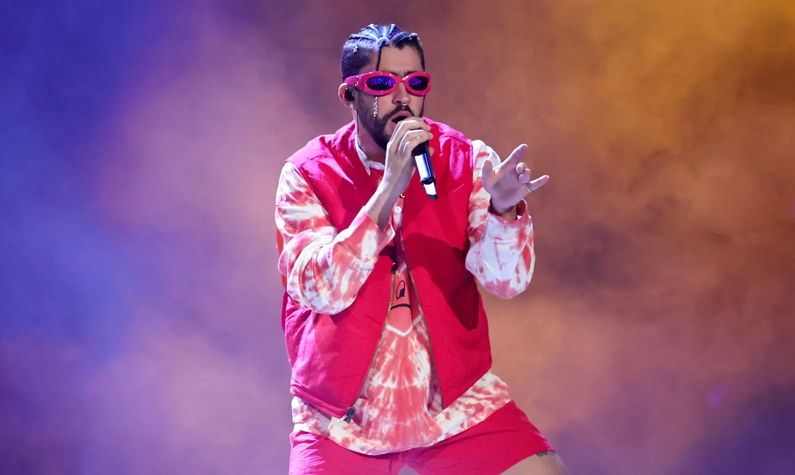

Bad Bunny (nacido el 10 de marzo de 1994 en San Juan , Puerto Rico) es un cantautor puertorriqueño que contribuyó a ampliar el público del reguetón y el trap . Su estilo urbano también incorporó otros géneros , como el rock , el punk y el soul .
 Empezó a cantar de joven y eligió su nombre artístico, Bad Bunny, tras compartir en internet una foto suya de niño con un disfraz de conejito y una expresión de mal humor. Creó una cuenta de Twitter con ese nombre, que se mantuvo vigente a medida que comenzaba a ganar fama. Bad Bunny asistió a la Universidad de Puerto Rico en Arecibo, donde tomó clases de comunicación audiovisual . Por las noches trabajaba en su música, que se centra en...reggaetón yMúsica trap. El primero es un tipo de rap en español mezclado con reggae , mientras que el segundo se centra en problemas urbanos, como las drogas y la violencia, y utiliza cajas y platillos sintetizados para crear un ritmo enérgico.
 Bad Bunny comenzó a publicar canciones en SoundCloud , una plataforma internacional de audio donde los suscriptores pueden compartir música. El productor musical puertorriqueño DJ Luian descubrió "Diles" de Bad Bunny y en 2016 lo fichó por el sello Hear This Music. Bad Bunny se hizo famoso casi de inmediato con "Soy peor". En 2017, lanzó más sencillos, tanto en solitario como en colaboración con otros artistas. Cabe destacar "Sensualidad", con la colaboración del cantante colombiano Bad Bunny.J Balvin y el cantante dominicano nacido en Estados Unidos, Prince Royce.
Bad Bunny comenzó a publicar canciones en SoundCloud , una plataforma internacional de audio donde los suscriptores pueden compartir música. El productor musical puertorriqueño DJ Luian descubrió "Diles" de Bad Bunny y en 2016 lo fichó por el sello Hear This Music. Bad Bunny se hizo famoso casi de inmediato con "Soy peor". En 2017, lanzó más sencillos, tanto en solitario como en colaboración con otros artistas. Cabe destacar "Sensualidad", con la colaboración del cantante colombiano Bad Bunny.J Balvin y el cantante dominicano nacido en Estados Unidos, Prince Royce.